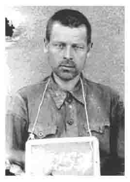
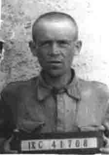

июль - август 2009 года
КНИГА ПАМЯТИ
УРОЖЕНЦЫ КАЛИНИНСКОЙ ОБЛАСТИ, ЗАХОРОНЕННЫЕ НА КЛАДБИЩЕ В ХЕРЛЕСХАУЗЕНЕ:
МАЧУЛЬСКИЙ Тимофей Ефремович родился 19 февраля 1905 г. в дер. Волыново Демяховского с/с Бельского р-на Смоленской (Калининской) области. Крестьянин. Православный. Русский. Жена Ирина Яковлевна. Довоенный адрес: Калининская область, Нелидовский район, дер. Нелидово.
В армию призван в 1941 г. Рядовой. Попал в плен 23 июля 1941 г. под г. Дюнабург (г. Даугавпилс), Латвия. Регистрацию прошел в шталаге IX A Цигенхайн. Номер регистрации 68682. 29 июня 1942г. направлен в рабочую команду 2510 Ветцлар. Заболел. 22 июля 1944 г. помещен в лагерь - лазарет шталаг IX B Херлесхаузен.
Погиб в лагере 26 октября 1944 г.
ПЕТРОВ Иван Андреевич родился в 1907 г. в д. Мошенка, ст. Березайка, Бологовского р-на Калининской области. Крестьянин. Православный. Русский. Мать Царева. Жена Александра.
В армию призван Бологовским РВК в 1941 г. Рядовой 163-го стрелкового полка. Попал в плен 18 августа 1941 г. под г. Нарва в Эстонии. Регистрацию прошел в шталаге X B Сандбостель. Номер регистрации 107552. 6 ноября 1941 г. переведён в шталаг IX C Бад-Зульца. 10 октября 1942 г. направлен в лазарет лагеря военнопленных Рамсборн, позднее, дата не установлена, в лагерь - лазарет шталаг IX B Херлесхаузен.
Погиб в лагере 5 апреля 1943г. |

РЯБИНИН Федор Игнатьевич |
РЯБИНИН Федор Игнатьевич родился 8 февраля 1905 г. в дер. Морозовка Козловского (Спировского) района Калининской области. Русский, православный, из крестьян. Жена Рябинина Е.
В армию призван Козловским РВК в июне 1941 г. Рядовой 320 стрелкового полка. Попал в плен 22 августа 1941 г. под г. Таллин, Эстония. Регистрацию прошел в шталаге X B Сандбостель. Номер регистрации 112536. 6 ноября 1941 г. переведен в шталаг IX C Бад-Зульца. 10 октября 1942 помещен в лазарет Айзенах лагеря военнопленных Рамсборн, 23 мая 1943 г. - в лагерь - лазарет шталаг IX B Херлесхаузен.
Погиб в лагере 8 июня 1943 г.
МЕДВЕДЕВ Иван Яковлевич родился 17 июля 1920 г. в дер. Мокроть Лужницкого с/с Торопецкого района Калининской области. Русский, православный. Мать Матрена Карповна.
В армию призван Луковниковским РВК Калининской области в 1940 г. Рядовой, пехотинец. Попал в плен. Регистрацию прошел в шталаге IX C Бад-Зульца. Номер регистрации 41029. До 17 июля 1944г. находился в рабочей команде 420 В. 17 августа 1944 г. переведен из лагеря военнопленных Рамсборн в лагерь – лазарет шталаг IX B Херлесхаузен.
Умер в лагере от туберкулеза легких 23 мая 1945 г., уже после его освобождения американцами.
КИРИЛЛОВ Николай Кириллович родился 9 ноября 1910 г. в дер. Боярское Высоковского (Торжокского) района Калининской области. Русский, православный, каменщик. Жена Мария Ф.
В армию призван Высоковским РВК в 1941 г. Сержант, 183 стрелковый полк. Попал в плен 26 июля 1941 г. под г. Порхов Псковской области. Регистрацию прошел в шталаге IX В Бад Орб. Номер регистрации 22441. 12 сентября 1944 г. переведен в шталаг IX C Бад-Зульца. 20 января 1945 г. направлен в в лагерь – лазарет шталаг IX B Херлесхаузен.
Погиб в лагере 23 февраля 1945 г.
КАРПУШЕНКОВ Сергей Иванович родился 26 июня 1913 г. в дер. Гаврилово Октябрьского (Западнодвинского) района Калининской области.
Русский, православный, из крестьян. Холост. Мать Анна Моисеевна.В армию призван Октябрьским РВК в июне 1941 г. Рядовой, 270 стрелковый полк. Попал в плен. Регистрацию прошел в шталаге IX C Бад-Зульца. Номер регистрации 41706. 27 августа 1942 г. назначен в рабочую команду 1556 Рудольштат. 13 мая 1943 г. направлен в лагерь – лазарет шталаг IX B Херлесхаузен.
Погиб в лагере 25 июня 1943 г.
ЯКОВЛЕВ Андрей Алексеевич родился 1 сентября 1909 г. в дер. Тарасиха, п/о Котлован, Удомельского района Калининской области. Крестьянин. Православный. Русский. Мать Арсентьева. Жена Анна Петровна.
В армию призван Удомельским РВК в 1941 г. Рядовой 180-го стрелкового полка. Попал в плен 9 июля 1941 г. под г. Холм Калининской (Новгородской) области. Регистрацию прошел в шталаге X B Сандбостель. Номер регистрации 107845. 7 ноября 1941 г. переведён в шталаг IX A Цигенхайн, 11 июня 1943 г. - в лагерь – лазарет шталаг IX B Херлесхаузен. Погиб в лагере 30 ноября 1943 г.
НИКОЛАЕВ Петр Иванович родился 24 января 1916 г. в дер. Ключевка Воздвиженского с/с Максатихинского района Калининской области. Карел. Жена Устинья.
В армию призван Максатихинским РВК 14 августа 1941 г. Сержант, командир отделения, 1002 стрелковый полк, 305 стрелковая дивизия. Попал в плен, регистрацию прошел в шталаге IX A Цигенхайн. Номер регистрации 108640. 30 декабря 1942 г. по болезни переведен в лагерь – лазарет шталаг IX B Херлесхаузен.Погиб в лагере 10 марта 1943 г.
|

КАРПУШЕНКОВ Сергей Иванович
|
Несколько дней тому назад Фонд «Жить и Помнить» получил информацию из областного архива Днепропетровской области. В ней - имена воинов - калининцев, содержащихся в лагере военнопленных, который находился в г. Днепропетровске, Украина на ул. Чичерина. Они умерли от ран и болезней в лазарете лагеря, развернутом оккупантами на территории 1-й городской инфекционной больницы на ул. Канатная. Эта больница существует и сейчас. Погибавших в лазарете военнопленных хоронили на кладбище, что на ул. Энергитическая. Рядом с этим захоронением военнопленных во время оккупации немцы расстреляли двадцать тысяч мирных жителей, партизан и подпольщиков. В этом месте установлен памятник жертвам фашизма.
Из письменного заявления ефрейтора 8 батареи артполка 1 словацкой моторизованной дивизии Михаила Мудрака: «Я считаю своим долгом рассказать о зверствах, которые чинят немцы над советским населением и красноармейцами, попавшими в плен. Вот что было в Днепропетровске. Здесь всю зиму существовал концентрационный лагерь для пленных красноармейцев. От голода и холода в лагере ежедневно умирало 5—8 человек. Немцы десятками расстреливали пленных русских за малейшую провинность. Больше половины находившихся в этом лагере пленных погибло. Я видел, как по улице вели группу русских военнопленных. Они были голодны и просили у граждан чего-нибудь поесть. Некоторые женщины выносили сухари, но немецкие солдаты не подпускали их. Один из пленных пытался подхватить кусок хлеба, брошенный женщиной. Немецкий солдат тут же застрелил красноармейца.
Я не мог дольше оставаться в этом бандитском таборе и добровольно перешёл на сторону Красной Армии. Прошу командование Красной Армии дать мне возможность с оружием в руках сражаться против немецко-фашистских захватчиков — этих злейших врагов славянских народов. Ефрейтор 8 батареи артполка 1 словацкой мотодивизии Михаил Мудрак».
КОМАРОВ Иван Васильевич родился в 1920 г. в дер. Пищалкино. Задорского с/с Сонковского района Калининской области.
Призван Сонковским РВК в 1942 г. Рядовой, 51 Армия, Северо –Кавказский фронт. По донесению штаба СКФ – пропал без вести 17 мая 1942 г. В документах лазарета адрес: ст. Питалкино, д. 92.
Погиб в лазарете 18 июля 1942 г.
СМОЛЯНИНОВ Степан Поликарпович родился в 1919 г., совхоз 15 лет Октября, Калининский район, Калининская область. в Тверской области.
В армию призван Калининским РВК в 1939 г., младший сержант, 12 АБ, Черноморский флот. В циркуляр начальника организационно-строевого Управления ЧФ № 00631 от 29 сентября 1942 г. включен как пропавший без вести 2 июля 1942 г. В документах лазарета: СТОЛЬЯННИКОВ Степан Поликарпович, русский, 1919 года рождения, г. Калинин, ул. Горького 4/3. Погиб в лазарете 24 августа 1942 г.
СИМОНОВ Иван Николаевич родился в 1902 г. в г. Ржеве Калининской области. В документах лазарета: г. Ржев, 1-я Успенская улица, 49. В донесении о безвозвратных потерях 29 стрелковой дивизии: ст. лейтенант, помощник начальника артиллерии, пропал без вести в районе станции Абганерово Сталинградской области 29 августа 1942 г.
Погиб в лазарете 17 ноября 1942 г.
ЛЮБИМОВ Михаил Васильевич родился в 1919 г. в Мстинском районе Ленинградской области. Жена Татьяна Васильевна. Довоенный адрес: г. Бологое, ул. Замостинская, дом 2. В другом документе: г. Бологое, ул. 2-я Змейка, дом 2.
Погиб в лазарете 17 октября 1942 г.
АБАКШИН Андрей Федорович (в Книге Памяти Тверской области АБАКИН, в документах лазарета АБАШКИН) родился в 1919 г. в дер. Новое Дюдиковского с/с Овинищенского (Весьегонского) района Калининской области.
В армию призван Овинищенским РВК в 1939 г. По учету в картотеке потерь ВМФ служил в ПВО СОР Черноморского флота, сержант, связист, член ВЛКСМ. В картотеке учета потерь ВМФ - пропал без вести 3 июля 1942 г.
Погиб в лазарете 23 октября 1942 г.
Все погибшие и захороненные в г. Днепропетровске наши земляки в Книге Памяти тверской области числятся пропавшими без вести.
От редакции. Всех, кому знакомы эти имена, кто располагает информацией об их родственниках, просим сообщить об этом по телефону 8-(4822)-35-70-18.